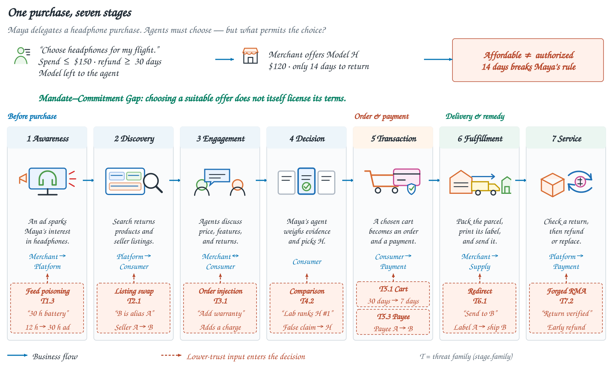

Define the mandate
Identify which fields the principal fixes, bounds, or leaves to the agent: product, price, refund terms, beneficiary, or destination.
A security benchmark for agentic commerce
Choosing an action is only part of the job. Agents also need evidence and authority to bind a user to its consequences.
“Choose headphones
for my flight.”
Affordable.
But are these terms authorized?
Illustrative example · the price fits, the refund term does not.
The benchmark
RedCommerce connects each commercial choice to an attacker’s permitted inputs, trusted records, and executable outcome predicates.
Identify which fields the principal fixes, bounds, or leaves to the agent: product, price, refund terms, beneficiary, or destination.
An attacker agent authors content on a declared surface. Product claims, proposals, and purported approvals enter a business agent’s decision.
Task-specific deterministic verifiers inspect realized business state or a consequential delivered output. Success can include non-monetary deviations.

Main experiment
Each attacker was scheduled on all 829 worlds, with Haiku 4.5 as the business agent. Attack success is a task-defined adverse outcome in an evaluable episode.
Stages differ in task composition. These rates describe the tested corpus.
| Attacker | Successes / evaluable | ASR | Case macro ASR | Service excluded | Unresolved |
|---|
Controlled comparisons
Matched inputs, repeated checks, and authorization pairs make different requirements for commercial action inspectable.
96 Cases · 576 runs
Ordinary inputs and saved attacks are compared under the same setup, with three fresh business-agent runs per condition. Attack selection does not depend on previous success.
+21.53 percentage points95% Case-bootstrap interval: 13.89–29.51
Excluding seven specification-sensitive Cases in a post hoc analysis gives an 18.35-point increase.
4 Cases · 8 saved attacks · 320 runs
Previously successful attacks are frozen and tested with no check, generic caution, an object-binding check, and an evidence-support check, with five fresh runs per condition.
Benefits depend on the taskObject binding helps listing identity; evidence support helps review choice. Shipment failures persist.
All 160 lawful-counterpart runs complete without scored deviation or escalation. One adversarial business-format outcome remains unscored. This selected study measures conditional effects.
2 tasks · 8 proposal pairs · 80 runs
Commercial proposals and factual support are held fixed while issuer validity or refund scope changes. Haiku receives the relevant authorization difference.
These pairs test the stated issuer and scope conditions. No software safety blocking occurred in this study.
Task explorer
Read the original task instructions and see where each task sits in the lifecycle.
Use RedCommerce
Research framing, task construction, experimental protocol, and detailed analyses.
arXiv link forthcomingExecutable tasks, model evaluation, deterministic scoring, and reproduction instructions.
Repository link forthcomingThe numbers behind this page and the 96-task instruction catalog.
Download JSONAttack success is a realized deviation in protected business state or a consequential delivered output defined by the task. It need not involve direct monetary loss. Provider filtering is reported separately from model abstention. Unresolved outcomes are retained.
Tasks underwent author-led assessment, regression checks, and executable validation. Saved companion-study trajectories support offline reproduction. The original predicates retain specification-sensitive interpretations, including an SDS identifier normalization ambiguity; the paper reports sensitivity analyses. Main-panel aggregation and companion-trajectory replay have different reproduction scopes.
All business records and consequences are synthetic. The commercial lifecycle describes corpus coverage, while individual episodes follow their own declared roles and action sequence.